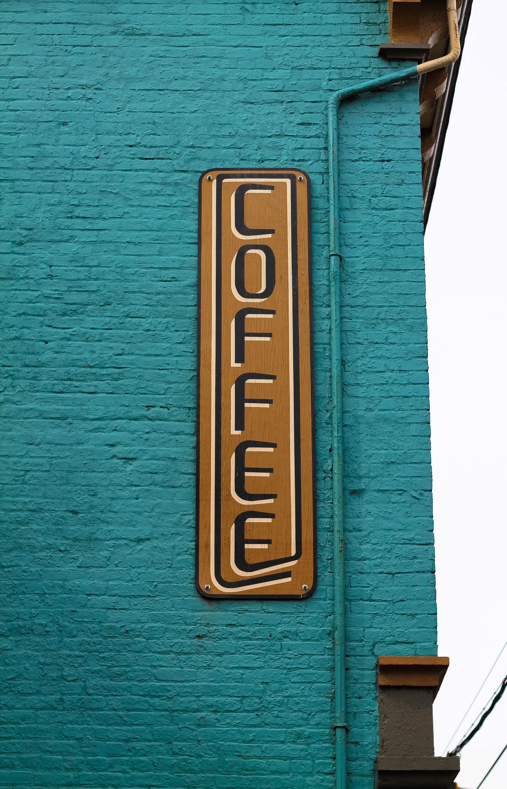

Coffee and Cigarettes


Glynn spent his formative years serving in an elite special forces unit of the United States Army, then later went on to found his own private mercenary company. But his lifelong dream was to own his own coffee-and-cigarettes boutique. A place where writers, artists, beatniks, poets, grad students, yoga instructors, wellness coaches, and other assorted riff-raff could congretate, imbibe caffeinated beverages, and smoke with impunity. After 40+ years of "real work", Glynn accomplished his dream.
Located in an abondoned warehouse in a dodgy part of town, Coffee and Cigarettes offers everything the discriminating coffee drinker -- and cigarette smoker -- could hope to find. So long as all they hope to find is plain old coffee, stove-top espresso, orange pekoe iced tea, and, of course, cigarettes.
